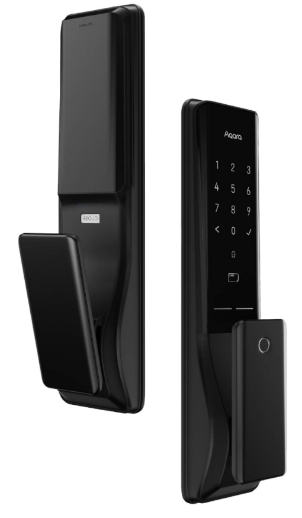
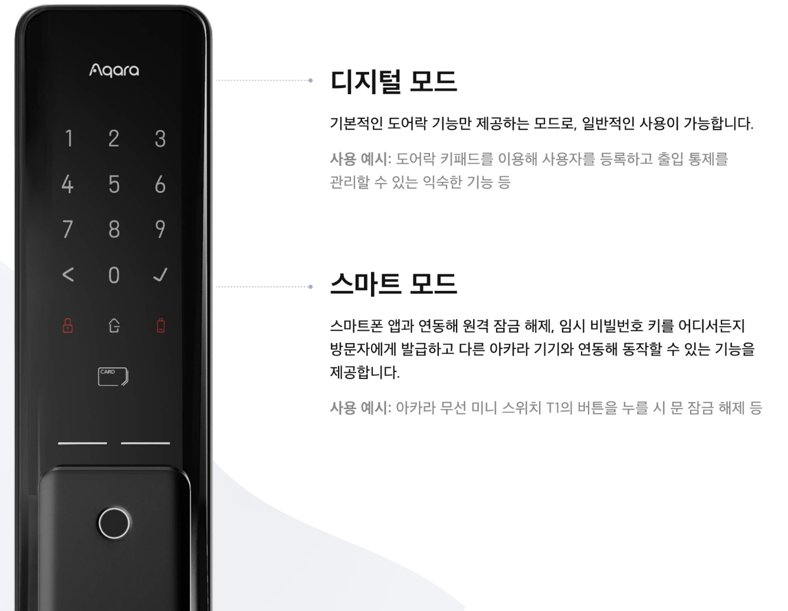
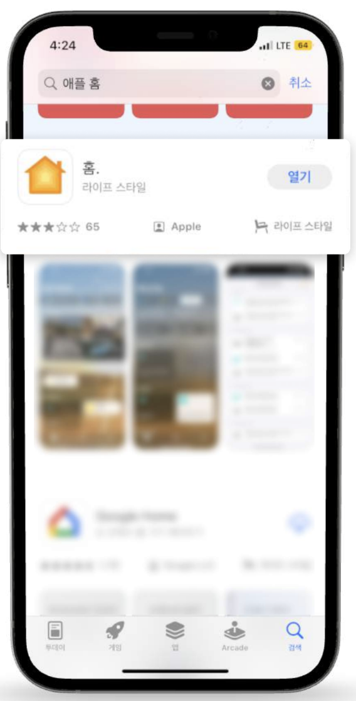
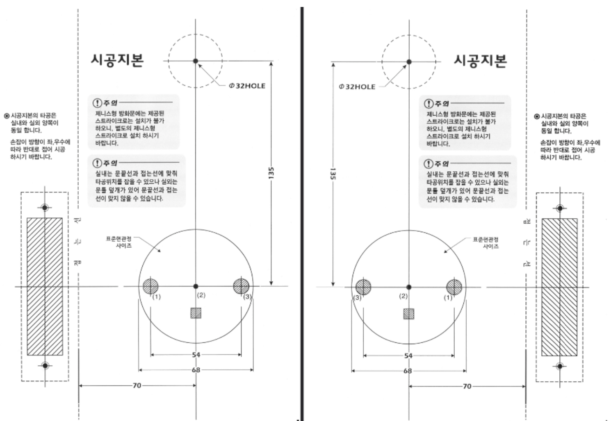

9 K100 - 상세 설명서
9.1 제품 소개
스마트 도어락 K100은 국내 최초 애플 홈을 완벽하게 지원하는 One-stop 지문 인식 푸시풀 도어락입니다. 디지털 도어락 기능은 물론 아카라 홈, 애플 홈, 구글 홈 등 글로벌 스마트홈 플랫에서의 사용을 지원합니다.
- 2024년 상반기 삼성 SmartThings 지원 예정

9.2 K100 동작 설명
스마트 도어락 K100은 디지털 모드와 스마트 모드를 지원 합니다.

9.2.1 디지털 모드
9.2.1.1 키패드 메뉴
도어락의 설정 모드로 진입하기 위해 후면 배터리 커버를 열어 ‘R’ 버튼을 누릅니다. 이후 아래와 같은 음성이 제공됩니다.
[도어락 키패드 메뉴 사용 요약]
<<음성 멘트 - 도어락 설정 모드>>
‘For English, press 0’
‘사용자를 등록하려면 1을 누르세요’
‘사용자를 삭제하려면 2을 누르세요’
‘음량을 설정하려면 3을 누르세요’
홈킷을 연결하려면 4를 누르세요’
RF447 모듈 등록은 5를 누르세요’
아라홈 연결 설정은 6을 누르세요’
‘다시 들으려면 확인버튼을 누르세요. 다시 들으려면 이전버튼을 누르세요.’
| Item | Action 1 | Action 2 | Action 3 |
|---|---|---|---|
| 사용자 추가 | ’R’을 짧게 누릅니다. | ’1’을 짧게 누릅니다. | 지문/NFC/암호를 추가합니다. |
| 사용자 삭제 | ’R’을 짧게 누릅니다. | ’2’을 짧게 누릅니다. | 전면 패널에서 사용자 ID를 입력하고 ’✓’를 누릅니다. |
| 음량 설정 | ’R’을 짧게 누릅니다. | ’3’을 짧게 누릅니다. | 잠금 해제 알림/알람 음량 설정 |
| 애플 홈킷 연결 | ’R’을 짧게 누릅니다. | ’4’을 짧게 누릅니다. | 홈킷 설정 코드 스캔 |
| RF447 등록 | ’R’을 짧게 누릅니다. | ’5’을 짧게 누릅니다. | 송신기의 ’S’를 짧게 누릅니다. |
| 아카라홈 앱 연결 | ’R’을 짧게 누릅니다. | ’6’을 짧게 누릅니다. | 아카라홈앱 사용 및 앱 페어링 코드 입력 |
| 언어 설정 | ’R’을 짧게 누릅니다. | ’0’을 짧게 누릅니다. | 언어 변경(국문 - 영문) |
| 초기화 | ’R’을 길게 누릅니다. | 디지털 모드: ’✓’를 짧게 누릅니다. 스마트 모드: 관리자 비밀번호/지문을 확인(‘✓’)을 누릅니다. |
새로운 설정 시작 |
9.2.1.2 사용자 등록
9.2.1.3 사용자 삭제
9.2.1.4 음량 설정
RF 447 모듈 등록
9.2.1.5 수동 잠금 설정
9.2.1.6 도어락 초기화
9.2.2 스마트 모드
9.2.2.1 Aqara Home 앱 다운로드
앱 스토어에서 “Aqara Home”을 검색하거나 아래 로고를 클릭해 주세요.


9.2.2.2 아카라 홈 앱 연결과 동작
스마트 모드를 사용하기 위해서 문과 물리적으로 설치가 완료된 스마트 도어락 K100과 아카라 허브, 그리고 아카라 허브, 그리고, 아카라 홈 앱이 설치된 스마트 폰이 필요합니다. 앱에서 도어락과 페어링을 진행하고 사용자를 등록하면 스마트 모드들 사용할 준비가 완료됩니다.
9.2.2.3 장치 등록
스마트 모드 사용을 위해 아카라 홈 앱을 실행시켜 스마트 도어락 K100을 등록합니다. 등록 과정은 다음과 같습니다.
9.2.2.4 최초 사용자 등록
9.2.2.4.1 최초 비밀번호 등록
스마트 모드에 처음으로 등록되는 사용자는 관리자 권한을 부여받게 되며, 스마트 모드를 활용하기 위해서는 관리자 권한을 가진 사용자가 최소 1명은 반드시 등록 되어 있어야 합니다. 최초 관리자로 등록되는 사용자는 도어락 비밀번호를 설정합니다. 이 비밀번호는 도어락 리셋 등과 같은 주요 기능을 수행할 때 필수적으로 필요한 정보이므로, 꼭 기억해 두어야 합니다.
9.2.2.4.2 최초 지문 등록
해당 비밀번호는 도어락 리셋 등과 같은 주요 기능을 수행할 때 필수로 필요한 정보이므로, 반드시 지문 정보를 기억해 두어야 합니다.
9.2.2.5 도어락 동작 확인
화면에 제공되는 절차에 따라 도어락이 정상 동작하는지 확인합니다.
9.3 애플 홈 앱 연결과 동작
스마트 도어락 K100을 애플 홈에 등록하여 원격 제어나 자동화 기능을 이용하기 위해서는 Apple TV (4세대 및 TV iOS 12.0 이상), iPad (iOS 12 이상) 또는 HomePod 등 홈 허브로 설정한 애플 기기가 있어야 합니다.

9.4 사용자 관리
9.4.1 사용자 등록
아카라 홈 앱에서 도어락을 잠금 해제하거나 제어할 수 있는 사용자를 등록할 수 있습니다. 또한 필요 목적에 따라 관리자/일반 사용자/임시 사용자를 추가할 수 있습니다.
9.4.2 사용자 수정
등록된 사용자의 인증 수단 이름을 수정하거나, 사용자의 권한을 벼경할 수 있습니다. 권하 변경은 ’관리자 <-> 일반사용자’만 가능합니다.
9.4.3 사용자 삭제

9.4.4 임시 사용자(정기 비밀번호)
특정 조건(시간, 요일, 기간 등)에만 유효한 비밀번호를 등록하고 실을 때 생성하는 사용자입니다.
9.4.5 일회성 암호
일호성 암호는 도어락을 한 번만 열 수 있으며, 사용된 비밀번호는 더 이상 사용할 수 없습니다.
9.5 허브 설정
9.5.1 허브 연결
스마트 도어락 K100과 아카라 홈 앱이 연결될 때는 기본적으로 블루투스로 연결되어 스마트모드의 모든 기능을 수행합니다. 만일 브루투스를 연결할 수 없는 환경이나 상황일 경우, 아카라 홈 앱에 연결된 허브와 도어락을 연결하고 두개의 디바이스가 지그비 통신으로 일부 기능을 수행할 수 있도록 합니다.
9.5.2 허브 설정/교체/연결 해제
9.5.3 잠김 해제
9.5.3.1 원격 기능 - 원격으로 잠금 해제
아카라 홈 앱에서 연결된 도어락을 원격으로 잠금 해제 할 수 있는 기능입니다. 도어락 메인 페이지에서 [잠금을 해제하려면 길게 누르세요]버튼을 3초이상 누르게 되면 원격으로 잠금 해제됩니다. 단, 해당 기능을 수행하기 위해 블루투스 연결 또는 허브와 연결되어 있어야 원격 잠금 해제를 수행할 수 있습니다.
9.5.3.2 자동화를 통한 잠금 해제
’자동화를 통한 잠금 해제’는 필수적으로 연결된 허브가 존재해야 하며, 블루투스 연결과 무관하게 해당 토글 스위치가 활성화 되어야만 허브의 하위에 연결된 장치들과 자동화를 구현할 수 있습니다.
9.5.4 수동 잠금
수동잠금 기능은 실외에서 도어락 문을 여는 것을 제한하는 기능입니다.
9.5.5 통과 모드
통과 모드를 활성화하면 문을 닫아도 잠기지 않고 항상 열린 상태로 유지됩니다.
9.5.6 외출 모드
외출 모드는 내부에서 문을 열었을 경우 앱을 통해 사용자에게 푸쉬 알림을 제공하는 기능입니다.
9.5.7 방해 금지 모드
방해 금지 모드는 ‘도어락 파손 시도’,’데드볼트가 비정상’등 심각한 이벤트를 제외하고 안내 음성은 저음으로, 작동 안내는 음소거로 전환되는 기능입니다.
9.6 자동 실행
자동 실행은 특정 조건이 충족되길 원하는 시나리오를 ’IF) 실행조건’에 [추가]버튼을 눌러 설정하고, 조건이 충족되었을때 자동으로 수행되었으면 하는 시나리오를 ’THEN) 실행결과’에 [추가]버튼을 눌러 설정합니다.
9.6.1 방해 금지 모드 - [예시] 큐브 T1 Pro를 사용하여 도어락을 원격으로 잠금 해제하기
방해 금지 모드는 ‘도어락 파손 시도’,’데드볼트가 비정상’등 심각한 이벤트를 제외하고 안내 음성은 저음으로, 작동 안내는 음소거로 전환되는 기능입니다.
9.6.2 동시 실행 - [예시] 스마트 도어락 K100 외출 모드 활성화 + G3 영상 녹화하기
동시 실행은 사전에 정의될 실행 조건 없이 동작들로만 구성되어 사용자가 [실행]버튼을 누르게 되면 동시에 설정된 동작들이 수행됩니다.
9.7 제품 사양
- 참고 - 시공 지본
